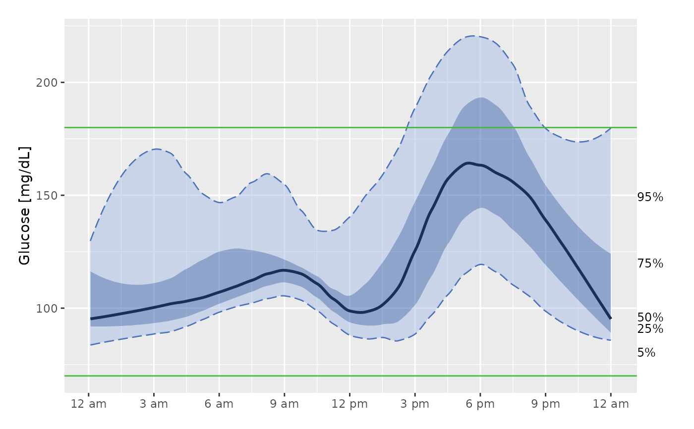

Plot Ambulatory Glucose Profile (AGP) modal day
plot_agp.RdThe function plot_agp produces an AGP plot that collapses all data into a single 24 hr "modal day".
Usage
plot_agp(data, LLTR = 70, ULTR = 180, smooth = TRUE, span = 0.3, dt0 = NULL,
inter_gap = 45, tz = "", title = FALSE)Arguments
- data
DataFrame object with column names "id", "time", and "gl". Should only be data for 1 subject. In case multiple subject ids are detected, the warning is produced and only 1st subject is used.
- LLTR
Lower Limit of Target Range, default value is 70 mg/dL.
- ULTR
Upper Limit of Target Range, default value is 180 mg/dL.
- smooth
Boolean indicating whether quantiles should be smoothed before plotting, default is TRUE
- span
Optional parameter indicating span for loess smoothing. Default is 0.3, larger values result in more smoothing, recommended to choose between 0.1 to 0.7.
- dt0
The time frequency for interpolation in minutes, the default will match the CGM meter's frequency (e.g. 5 min for Dexcom).
- inter_gap
The maximum allowable gap (in minutes) for interpolation. The values will not be interpolated between the glucose measurements that are more than inter_gap minutes apart. The default value is 45 min.
- tz
A character string specifying the time zone to be used. System-specific (see
as.POSIXct), but " " is the current time zone, and "GMT" is UTC (Universal Time, Coordinated). Invalid values are most commonly treated as UTC, on some platforms with a warning.- title
Indicator whether the title of the plot should display the subject ID. The default is FALSE (no title).
Details
Only a single subject's data may be plotted. If smooth = TRUE, then the quantiles are loess smoothed with the specified span before plotting. The horizontal green lines represent the target range, default is 70-180 mg/dL. The black line is the median glucose value for each time of day. The dark blue shaded area represents 50% of glucose values - those between the 25th and 75 quantiles. The light blue shaded area shows 90% of the glucose values - those between the 5th and 95th quantiles. Additionally, the percents shown on the right hand side of the plot show which quantiles each line refers to - e.g. the line ending at 95% is the line corresponding to the 95th quantiles of glucose values.
References
Johnson et al. (2019) Utilizing the Ambulatory Glucose Profile to Standardize and Implement Continuous Glucose Monitoring in Clinical Practice, Diabetes Technology and Therapeutics 21:S2 S2-17-S2-25, doi:10.1089/dia.2019.0034 .
Examples
data(example_data_1_subject)
plot_agp(example_data_1_subject)
